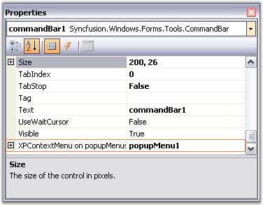
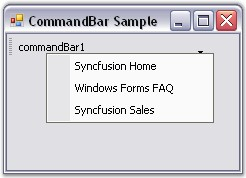

To show the Popup Menu on right-clicking on the CommandBar, follow the steps given below.
· Drag the CommandBarController onto the form, then add a CommandBar to the form by right clicking on CommandBarController.
· Add a PopupMenusManager along with the PopupMenu component. This will add an extended property on the CommandBar properties window as XPContextMenu on popupMenusManager. You can set the required Popup Menu from the dropdown list.
This can be done through code as follows.
|
[C#]
private Syncfusion.Windows.Forms.Tools.CommandBarController commandBarController1; private Syncfusion.Windows.Forms.Tools.CommandBar commandBar1; private Syncfusion.Windows.Forms.Tools.XPMenus.PopupMenu popupMenu1; private Syncfusion.Windows.Forms.Tools.XPMenus.ParentBarItem parentBarItem1; private Syncfusion.Windows.Forms.Tools.XPMenus.BarItem barItem1; private Syncfusion.Windows.Forms.Tools.XPMenus.BarItem barItem2; private Syncfusion.Windows.Forms.Tools.XPMenus.BarItem barItem3; private Syncfusion.Windows.Forms.Tools.XPMenus.PopupMenusManager popupMenusManager1;
this.commandBarController1 = new Syncfusion.Windows.Forms.Tools.CommandBarController(this.components); this.commandBar1 = new Syncfusion.Windows.Forms.Tools.CommandBar(); this.popupMenu1 = new Syncfusion.Windows.Forms.Tools.XPMenus.PopupMenu(this.components); this.parentBarItem1 = new Syncfusion.Windows.Forms.Tools.XPMenus.ParentBarItem(); this.barItem1 = new Syncfusion.Windows.Forms.Tools.XPMenus.BarItem(); this.barItem2 = new Syncfusion.Windows.Forms.Tools.XPMenus.BarItem(); this.barItem3 = new Syncfusion.Windows.Forms.Tools.XPMenus.BarItem(); this.popupMenusManager1.SetXPContextMenu(this.commandBar1, this.popupMenu1);
// commandBarController1 this.commandBarController1.CommandBars.Add(this.commandBar1); this.commandBarController1.HostForm = this;
// commandBar1 this.commandBar1.Text = "commandBar1"; this.commandBar1.PopupMenu = this.popupMenu1; this.popupMenusManager1 = new Syncfusion.Windows.Forms.Tools.XPMenus.PopupMenusManager(this.components);
// popupMenu1 this.popupMenu1.ParentBarItem = this.parentBarItem1;
// parentBarItem1 this.parentBarItem1.Items.AddRange(new Syncfusion.Windows.Forms.Tools.XPMenus.BarItem[] { this.barItem1, this.barItem2, this.barItem3}); this.parentBarItem1.Style = Syncfusion.Windows.Forms.VisualStyle.OfficeXP;
// barItem1 this.barItem1.Text = "Syncfusion Home";
// barItem2 this.barItem2.Text = "Windows Forms FAQ";
// barItem3 this.barItem3.Text = "Syncfusion Sales"; |
|
[VB.NET]
Private commandBarController1 As Syncfusion.Windows.Forms.Tools.CommandBarController Private commandBar1 As Syncfusion.Windows.Forms.Tools.CommandBar Private popupMenu1 As Syncfusion.Windows.Forms.Tools.XPMenus.PopupMenu Private parentBarItem1 As Syncfusion.Windows.Forms.Tools.XPMenus.ParentBarItem Private barItem1 As Syncfusion.Windows.Forms.Tools.XPMenus.BarItem Private barItem2 As Syncfusion.Windows.Forms.Tools.XPMenus.BarItem Private barItem3 As Syncfusion.Windows.Forms.Tools.XPMenus.BarItem Private popupMenusManager1 As Syncfusion.Windows.Forms.Tools.XPMenus.PopupMenusManager
Me.CommandBarController1 = New Syncfusion.Windows.Forms.Tools.CommandBarController(Me.components) Me.commandBar1 = New Syncfusion.Windows.Forms.Tools.CommandBar() Me.popupMenu1 = New Syncfusion.Windows.Forms.Tools.XPMenus.PopupMenu(Me.components) Me.parentBarItem1 = New Syncfusion.Windows.Forms.Tools.XPMenus.ParentBarItem() Me.barItem1 = New Syncfusion.Windows.Forms.Tools.XPMenus.BarItem() Me.barItem2 = New Syncfusion.Windows.Forms.Tools.XPMenus.BarItem() Me.barItem3 = New Syncfusion.Windows.Forms.Tools.XPMenus.BarItem() Me.popupMenusManager1 = New Syncfusion.Windows.Forms.Tools.XPMenus.PopupMenusManager(Me.components)
' commandBarController1 Me.CommandBarController1.CommandBars.Add(Me.commandBar1) Me.CommandBarController1.HostForm = Me
' commandBar1 Me.commandBar1.Text = "commandBar1" Me.commandBar1.PopupMenu = Me.popupMenu1 Me.popupMenusManager1.SetXPContextMenu(Me.commandBar1, Me.popupMenu1)
' popupMenu1 Me.popupMenu1.ParentBarItem = Me.parentBarItem1
' parentBarItem1 Me.parentBarItem1.Items.AddRange(New Syncfusion.Windows.Forms.Tools.XPMenus.BarItem() {Me.barItem1, Me.barItem2, Me.barItem3}) Me.parentBarItem1.Style = Syncfusion.Windows.Forms.VisualStyle.OfficeXP
' barItem1 Me.barItem1.Text = "Syncfusion Home"
' barItem2 Me.barItem2.Text = "Windows Forms FAQ"
' barItem3 Me.barItem3.Text = "Syncfusion Sales" |

Figure 24: "XPContextMenu on popupMenusManager" property in the Properties Window of CommandBar Control

Figure 25: Popup Menu displayed on Right Clicking the CommandBar Control
See Also